2 Chronicles 20:12 · "We have no might against this great company that cometh against us; neither know we what to do: but our eyes are upon thee."
2 Chronicles 14-20; 26; 30 · Come Follow Me, July 20-26Primary (9-year-olds), Elk Ridge 15th Ward~40 minNo supplies needed
Objective. Four people who were in a tight spot, and what they did about it. Asa prayed instead of panicking. Micaiah told the truth when four hundred people wanted him to lie. Jehoshaphat was surrounded by three armies and said the best words in the whole lesson: "we know not what to do, but our eyes are upon thee." And Uzziah was strong and successful until pride knocked him over. The kids should walk out able to say: when I do not know what to do, I look to God, and whatever I am good at, I stay humble and keep seeking Him. Every principle lands with a cartoon of one of our own class living it out, so nobody has to guess what it looks like on a Tuesday.
↩ Last week / this week
Last week we met two good kings, Hezekiah and Josiah, in 2 Kings. This week the book of 2 Chronicles tells the story of Judah's kings all over again, so we hop back in time to some earlier kings: Asa, Jehoshaphat, and Uzziah. Then at the very end we land on Hezekiah again, doing something we did not see last week: throwing the biggest party in Jerusalem and inviting the people nobody expected.
BeforeSolomon
→
TodayAsa
→
TodayJehoshaphat
→
TodayUzziah
→
Last weekHezekiah & Josiah
Same kingdom, earlier kings. We are filling in the middle of the story.
01
The story so far (quick review)
~4 min
Warm-up: Let's see what stuck from last week. Tap the answer you think is right.
1. When the enemy king sent Hezekiah a mean, scary letter, what did Hezekiah do with it?
He spread it before the Lord. He did not carry the scary thing alone, he handed it straight to God. Keep that move in your pocket, we are going to see it again today.
2. How old was Josiah when he became king?
Eight years old. Younger than everyone in this room, and he still chose to do what was right.
3. While the workers were repairing the temple, what did they find?
The lost scriptures. Reading God's word turned Josiah's whole heart back to Him.
Bridge into today
Today is about a question everybody hits sooner or later: what do you do when the problem is way bigger than you are? Three kings and one prophet are about to show us four different answers, and only some of them work.
02
King Asa: who do you run to?
~5 min
First up: King Asa (say it: AY-suh). An enemy army came at him with a million soldiers and three hundred chariots. Asa's army was much, much smaller. So Asa did the smartest thing a small army can do. He prayed, out loud, honestly: "we rest on thee."
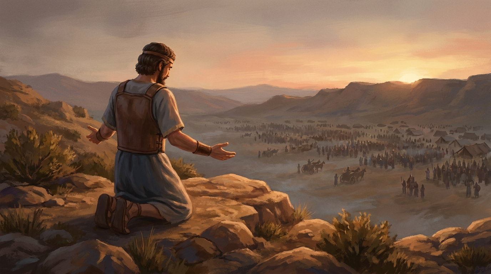
Asa's army was tiny. He prayed anyway, and the huge army fled.
"Lord, it is nothing with thee to help, whether with many, or with them that have no power: help us, O Lord our God; for we rest on thee."
🔎 Focus question
"It is nothing with thee to help, whether with many, or with them that have no power." What does that tell us about how big a problem has to be before God can handle it? (It does not matter. Big or small, strong or weak, it is nothing to Him.)
Here is the sad part, and it is the part worth talking about. Later in Asa's life another problem showed up, and this time Asa did not pray first. He took the treasure out of the temple and paid a foreign king to fight for him instead. A prophet came and told him he had leaned on the wrong thing. Tap both cards.
Activity · same king, two choices
Young Asa vs. older Asa
Tap each card to see what he did when trouble came.
2 Chronicles 14 · trouble comes
A million soldiers march at him. What does Asa do?
He cried unto the Lord. "We rest on thee." The huge army fled, and Judah had peace for years.
tap to reveal
2 Chronicles 16 · trouble comes again
Years later, a new threat. What does Asa do this time?
He paid a different king to help him. He trusted money and armies instead of God, and a prophet told him he had trusted the wrong thing.
tap to reveal
Tap both cards to compare.
Same man. Two very different moves. Trusting God once does not mean you are done. It is a thing you choose again every time something hard shows up. Even a good king had to keep choosing it.
Ask the class
When something goes wrong, what do we usually run to first? (A friend, a screen, being mad, giving up.) None of those are evil, but what would it change if prayer were the first stop instead of the last one?
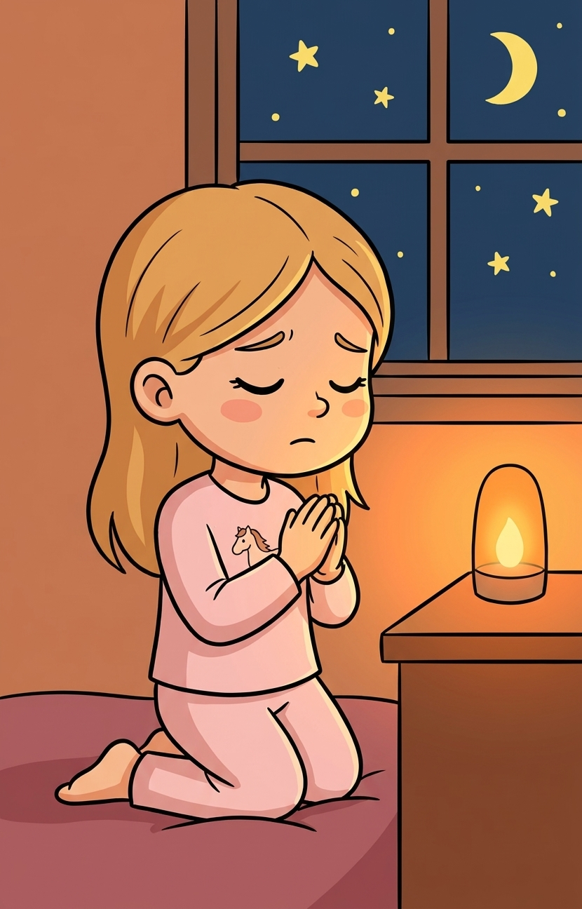
AlydaAsa's move, at bedtime: tell Heavenly Father about it first, not last.
03
Micaiah: 400 to 1
~6 min
Now a prophet named Micaiah (say it: my-KY-uh). Two kings wanted to go to war and wanted a prophet to tell them they would win. They had four hundred prophets lined up, and all four hundred said, "Go for it, you will win!"
Then somebody remembered Micaiah. The king said, out loud, "I hate him; for he never prophesied good unto me." Ouch. And on the walk over, the messenger leaned in and coached him: everybody else is saying good things, so you say something good too.
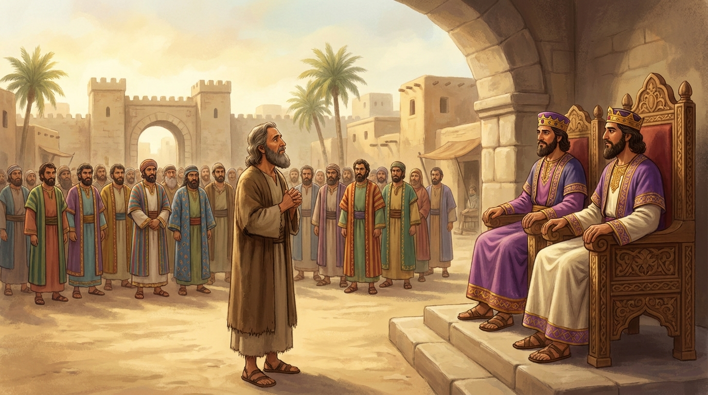
One prophet, two annoyed kings, and four hundred voices saying the opposite.
Activity · you are Micaiah
What do you say?
You are standing in front of two kings. 400 people already gave the popular answer. Tap your choice.
The king asks: "Should we go to battle?" God has told you the truth, and the truth is not what he wants to hear.
That is what he did. "As the Lord liveth, even what my God saith, that will I speak." He told them the truth: the army would be scattered like sheep with no shepherd. The kings went to battle anyway, and it happened exactly as he said.
Now you. Your whole group at school is laughing at a kid who is not there. Everybody is joining in.
Being the one honest voice is hard, and it counts. Micaiah was outnumbered 400 to 1 and still said the true thing. You will usually be outnumbered by a lot less than that.
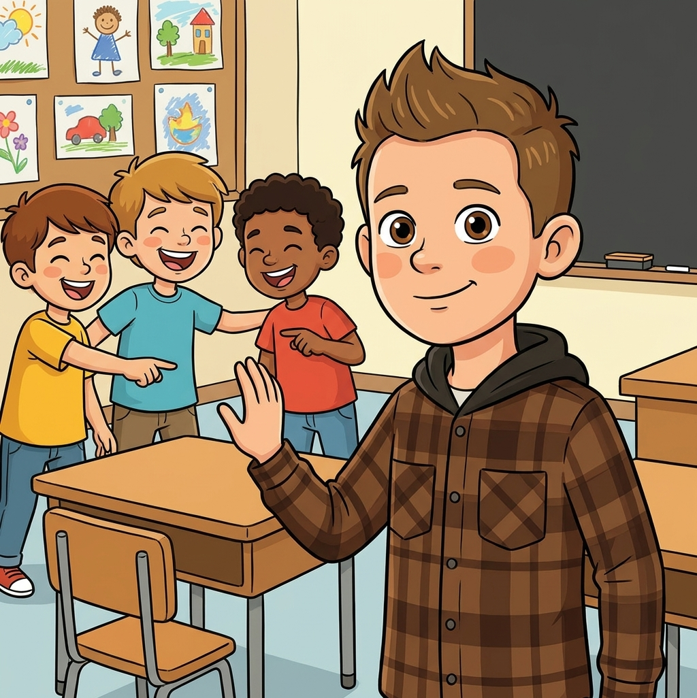
ColeBeing the one voice that says the true thing, even when the room is laughing.
"And Micaiah said, As the Lord liveth, even what my God saith, that will I speak."
🔎 Focus question
Where do you think Micaiah got the courage? What helps you be brave when you are the only one? (Knowing it is true. Praying first. One friend standing with you.)
04
Jehoshaphat: surrounded, and looking up
~11 min
This is the big one. Jehoshaphat (say it: juh-HOSH-uh-fat, yes, really) was king when a messenger ran in with the worst news of his life: three enemy nations were marching on Judah at the same time, from three directions, and they were already close.
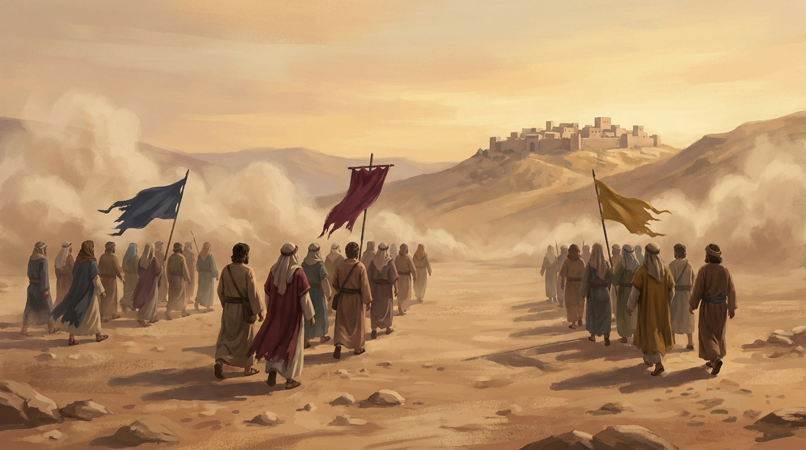
Moab, Ammon, and mount Seir, all at once. Judah was surrounded.
3enemy armies
0warning
1small kingdom
Ask the class
The scripture says plainly that Jehoshaphat "feared." He was scared. Is it okay to be scared? (Yes. Being scared is not the sin. What matters is what you do next.) Watch what he did next.
He did not send for more soldiers. He gathered everybody at the temple, the whole kingdom, and here is my favorite detail: the scripture makes sure to tell us the little kids were there too.
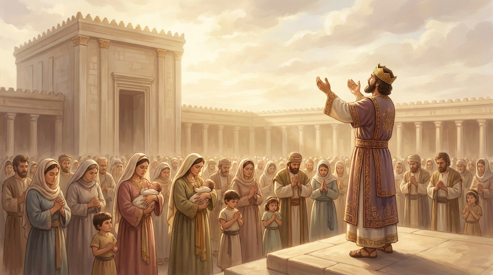
"And all Judah stood before the Lord, with their little ones, their wives, and their children."
"We have no might against this great company that cometh against us; neither know we what to do: but our eyes are upon thee. And all Judah stood before the Lord, with their little ones, their wives, and their children."
🔎 Focus question
He told God three honest things: this is too big for me, I do not even know what to do, and I am looking at you. Which of those three is the hardest one for you to say out loud?
Then a man named Jahaziel stood up and gave God's answer, and it is one of the best sentences in the Old Testament.
2 Chronicles 20:15, 17
"Be not afraid nor dismayed by reason of this great multitude; for the battle is not yours, but God's… Ye shall not need to fight in this battle: set yourselves, stand ye still, and see the salvation of the Lord."
So the next morning the army marched out. And Jehoshaphat put somebody in front of the soldiers. You pick: who should go first?
Activity · who marches out in front?
The strangest battle plan ever
Three armies are waiting. Who does Jehoshaphat send to the very front of the line?
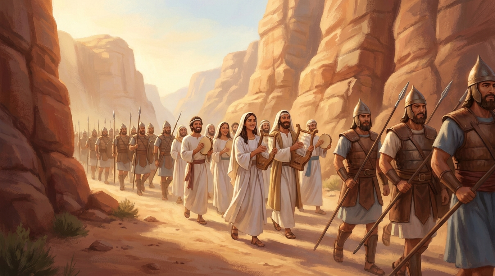
Pick who leads the way.
The singers went first. Not the soldiers. A choir, out in front of the army, singing "Praise the Lord; for his mercy endureth for ever." And the scripture says that when they began to sing and to praise, the Lord fought the battle for them. Judah did not have to swing a sword. They came home with joy, and their music led the way in.
"He appointed singers unto the Lord… as they went out before the army… Praise the Lord; for his mercy endureth for ever. And when they began to sing and to praise, the Lord set ambushments against [them]."
🔎 Focus question
Singing before anything good had happened yet is a way of saying "I already trust Him." When could you praise God before you know how something turns out?
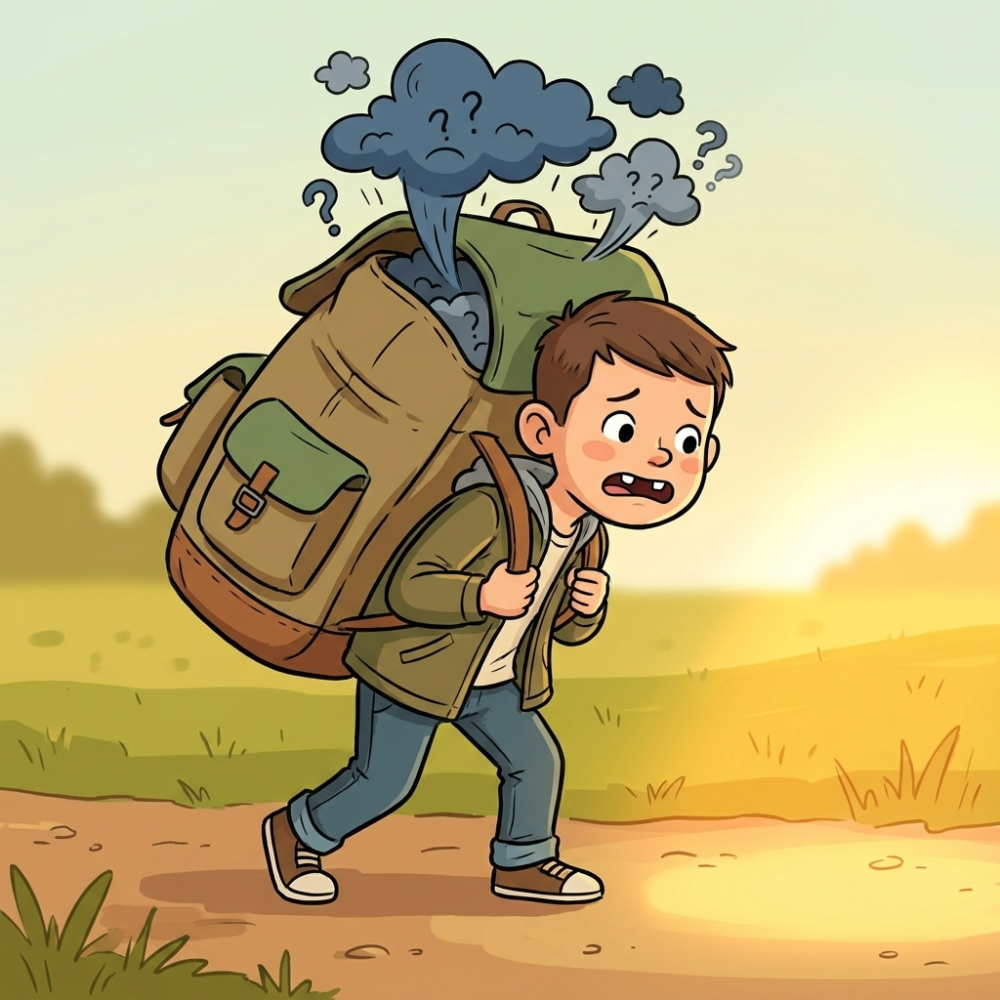
BraxtonCarrying the whole thing yourself. Heavy, slow, and nobody asked you to.
🙌 Object lesson · nothing to bring
"The battle is not yours"
The kids need to feel what it is like to hand a heavy thing over. This one uses their own arms, so there is nothing to carry in and nothing to hand out.
You'll need
Nothing. Just their arms, their voices, and the class.
How to run it: Everybody stand up and hold both arms straight out to the sides, like a T, and keep them there. While their arms are up, go around the room: each kid names one hard thing a person their age carries (a mean kid, a test, a sick grandma, missing someone). Arms stay out the whole time. By the fourth or fifth worry their arms are burning and somebody will complain, which is the whole point: this is what carrying it by yourself feels like, and it only gets heavier. Then read "the battle is not yours, but God's" and tell them to drop their arms and fold them for prayer. Ask what their arms feel like now. Then have everybody sing one verse of a Primary song right where they stand, just like Judah's singers marching out in front of the army. Point out: they still had to walk out to the battlefield, God just carried the fight.
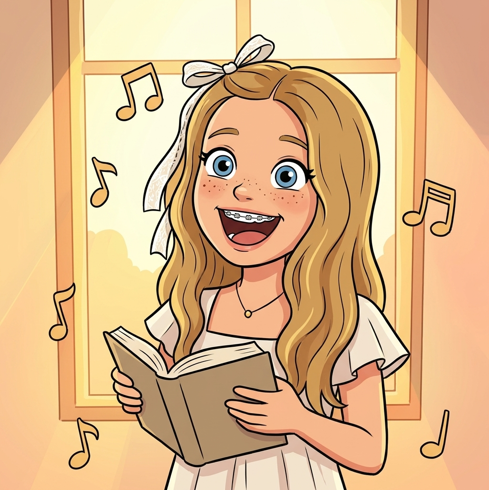
LexiSingers to the front. Praise Him before you know how it turns out.
Last king: Uzziah (say it: uh-ZY-uh). He became king at sixteen and he was good at it. Really good. The scripture gives him the best possible compliment: "as long as he sought the Lord, God made him to prosper." Watch those first four words. As long as.
Uzziah won wars, built towers and cities, dug wells, grew a huge army, and even invented machines to defend Jerusalem. Let's stack up everything he did. Tap the button to add each accomplishment.
Activity · build Uzziah's tower
How high can he go?
Add each thing Uzziah accomplished. Then see what happens at the top.
0 blocks. Start building!
"When he was strong, his heart was lifted up to his destruction." Uzziah decided the rules did not apply to him anymore. He walked into the temple to burn incense, a job God had given only to the priests, and when the priests told him to stop, he got angry. Right there in the temple, leprosy broke out on his forehead. He lived the rest of his life apart from everyone, and apart from the house of the Lord. The tower he built was real. Pride still knocked it over.
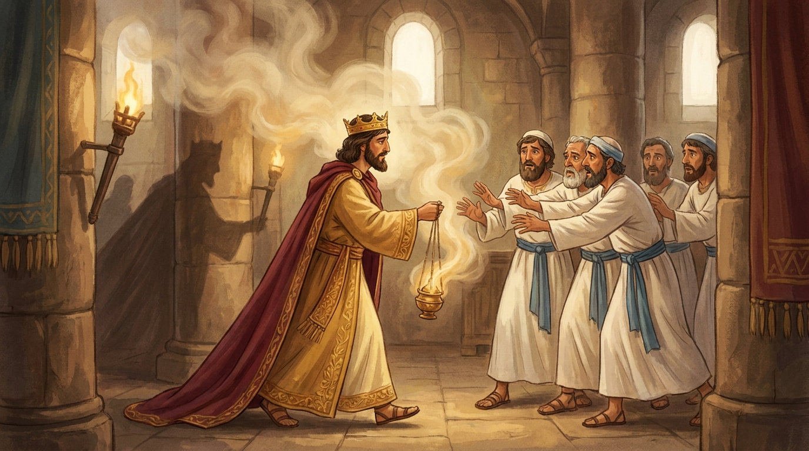
Uzziah, doing the one job that was never his to do, and getting angry when he was told to stop.
"As long as he sought the Lord, God made him to prosper… But when he was strong, his heart was lifted up to his destruction."
🔎 Focus question
Uzziah's problem started when he was winning, not when he was losing. Why do you think it can be harder to stay close to God when everything is going great?
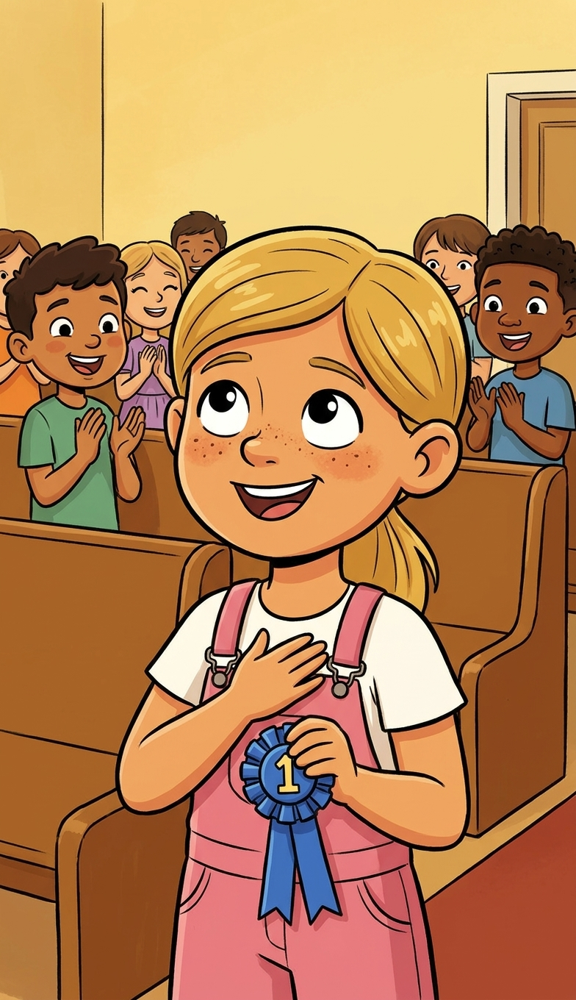
DannieThe Uzziah test: you just won. Now what does your heart do?
✊ Second object lesson · nothing to bring
The fist tower
The manual suggests stacking cups for this. Same idea with no cups: the kids are the tower.
You'll need
Nothing. Their own fists, stacked.
How to run it: Have the class build one tower together in the middle of the circle. You put a fist out, then each kid stacks a fist on top of the last one, and as each fist goes on, that kid names one thing Uzziah did (the tower on this page has the list if they need help). When the tower is as tall as their arms reach, ask what is keeping it up. Then say, "and then he decided he did not need God's rules," and pull the bottom fist out. The whole thing drops. Ask: what would have kept the tower standing? (Staying humble, keeping on seeking the Lord, listening when someone corrects you.) If your class would rather watch than stack, the build-and-topple tower above does the same job on the screen.
06
Doctrinal diamonds
~3 min
These chapters are full of short, powerful lines worth keeping. Come Follow Me calls them doctrinal diamonds. Tap each gem to uncover its line. Pick a favorite to mark in your scriptures this week.
2 Chron 14:11
💎
"We rest on thee."
2 Chron 15:7
💎
"Be ye strong therefore, and let not your hands be weak."
2 Chron 18:13
💎
"Even what my God saith, that will I speak."
2 Chron 20:15
💎
"The battle is not yours, but God's."
2 Chron 26:5
💎
"As long as he sought the Lord, God made him to prosper."
2 Chron 20:20
💎
"Believe in the Lord your God, so shall ye be established; believe his prophets, so shall ye prosper."
0 of 6 uncovered.
"My experience is that once you stop putting question marks behind the prophet's statements and put exclamation points instead, and do it, the blessings just pour."
President Russell M. Nelson
07
One more thing: Hezekiah invites everybody
~5 min
Remember Hezekiah from last week? Here is a story we missed. Israel and Judah had been split apart and fighting for a long, long time, like cousins who stopped talking. Hezekiah sent letters north anyway and invited all of them to come keep the Passover in Jerusalem. Some laughed at the invitation. But some came.
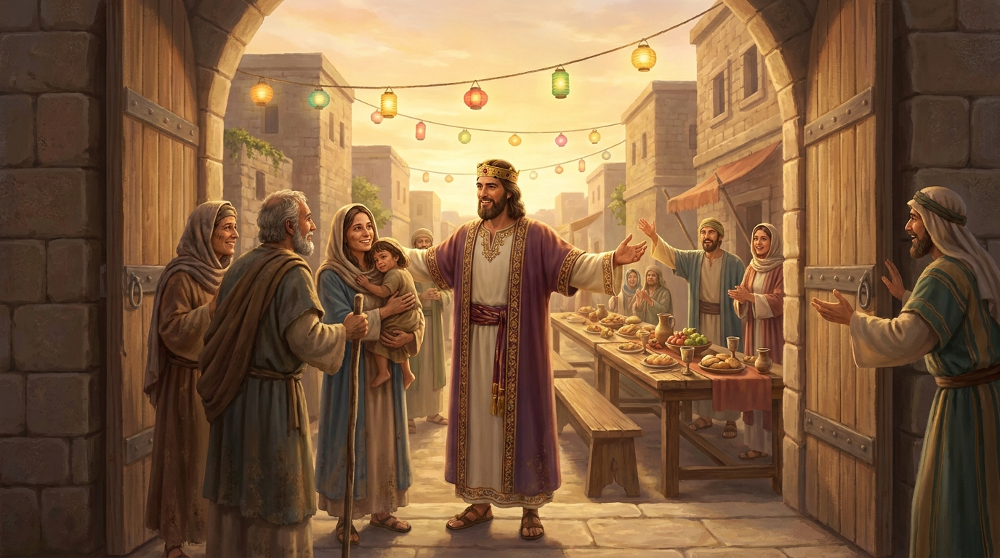
Travelers from the north arrive in Jerusalem, invited by a king who did not have to invite them.
Then a problem: a lot of the visitors showed up without doing all the things you were supposed to do before Passover. They did it wrong. Hezekiah could have sent them home. Instead he prayed for them, saying the Lord should pardon everyone who "prepareth his heart to seek God." And the scripture says the Lord listened to Hezekiah and healed the people. It turned into the biggest celebration Jerusalem had seen since Solomon.
"The good Lord pardon every one that prepareth his heart to seek God… And the Lord hearkened to Hezekiah, and healed the people."
🔎 Focus question
Hezekiah cared more about their hearts than about them getting everything perfect. Who in your class, or your ward, or your neighborhood could use that kind of invitation from you this week?
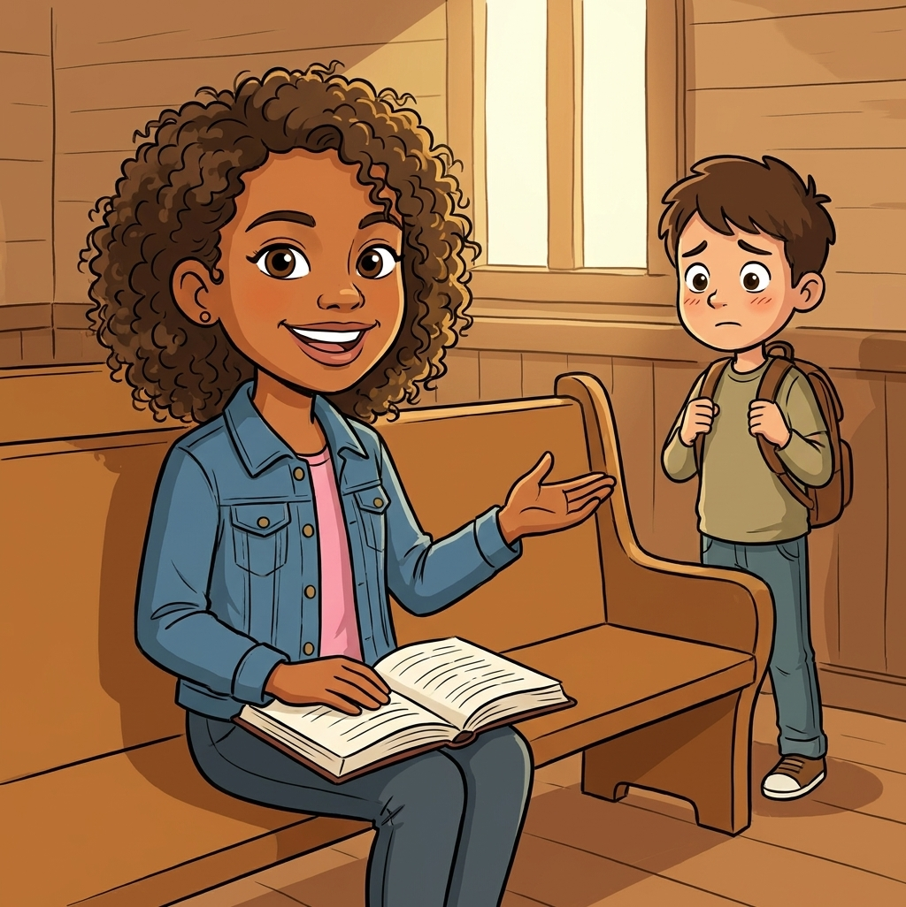
ZaleaHezekiah's invitation, in a chapel bench: come sit by me.
A new kid shows up at Primary. They do not know the songs, they answer questions wrong, and they seem a little embarrassed.
Be Hezekiah. He looked at people doing it imperfectly and said, in effect, "their hearts are seeking God, let them come." That is what a peacemaker does.
08
Take it home
~2 min
Be like Jehoshaphat: when something is too big and you have no idea what to do, say it to Heavenly Father in exactly those words: "I don't know what to do, but my eyes are on you." That is a real prayer and He answers it.
Be like Micaiah: say the true thing even when you are the only one saying it.
Do not be like Uzziah: when things are going great, that is the moment to stay humble and keep seeking the Lord.
Be like Hezekiah: invite the person who might not think they belong.
Brief testimony: God does not need us to be strong enough. He asks us to look to Him, and He fights battles we could never win by ourselves. Close with prayer.